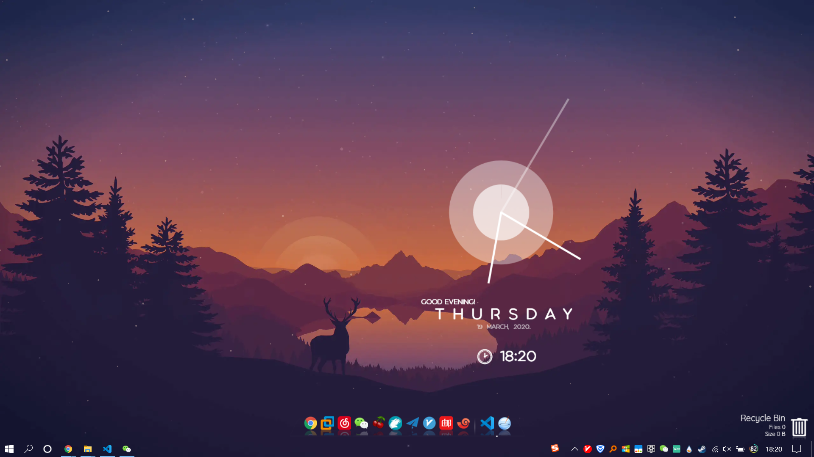
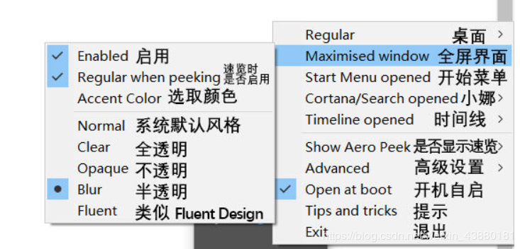

Table of Contents
参考链接
效果图

TranslucentTB
在Win10 1803下 存在无法全屏窗口任务栏透明的情况

Rainmeter-4.3.1
使用主题 equinox__by_hiphopium
传送门
主题传送门
Hide-Taskbar
可通过 Ctrl + Esc 隐藏桌面栏
TaskbarTool.v1.0.8
设置任务栏透明
传送门
FalconX_28.02.2020_1.4.4.0
设置任务栏图标居中，在Win10 1803下透明设置失效且会与TaskbarTool.v1.0.8冲突。升级1903后正常
wox
快捷启动工具Wox
传送门
everything
基于名称快速定位文件和文件夹,需要后台打开服务，可配合wox快速查找,开机自启需要设置任务计划程序，并且关闭以管理员身份运行
传送门
WallpaperEngin
动态壁纸，以下是推荐
- Firewatch real time day/night cycle
- Deep Space
Fences v3.0.8
桌面图标整理
StartIsBackPlusPlus
任务栏透明化以及图标定制功能
软媒桌面 v1.0.7.0
图标平面化(类Mac Os)
传送门